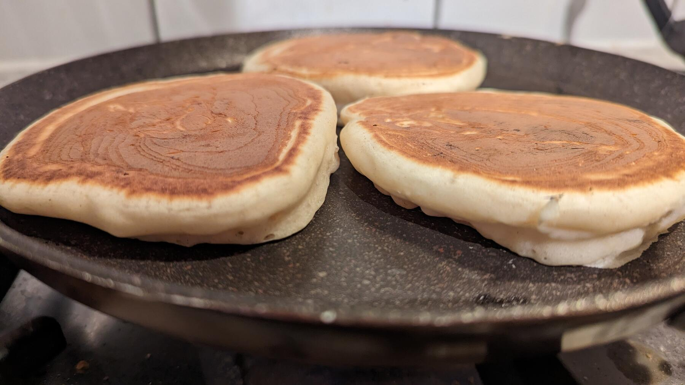

Zurück zur Übersicht
Buttermilch-Pancakes
Unkomplizierter Grundteig mit Buttermilch und einem Schuss Sprudel. Er ist neutral und passt süß wie herzhaft. Ergibt etwa 7 große Pancakes (17 cm).
- Zeit
- 20 Min.
- Schwierigkeit
- leicht
- Kategorie
- Süßgebäck
- Ernährung
- vegetarisch
Zutaten
Portionen
- 250 gMehl
- ½ PackungBackpulver
- 1 PriseSalz
- 500 mlButtermilch
- 2Eier
- 100 mlMineralwasser mit Kohlensäure (optional)
Zubereitung
- Die trockenen Zutaten vermischen, Buttermilch und Eier dazugeben und alles zu einem glatten Teig mixen. Für extra fluffige Pancakes danach noch das Mineralwasser unterrühren, aber sachte, sonst geht die Kohlensäure verloren. Der Teig kann ein paar Minuten ruhen, man kann aber auch sofort weitermachen.
- Den Teig portionsweise in eine beschichtete Pfanne geben und bei mittlerer Temperatur von beiden Seiten goldbraun backen. Gewendet wird, wenn die Oberseite gerade fest geworden ist, zur Sicherheit lieber zwischendurch die Unterseite prüfen. Ohne beschichtete Pfanne etwas Öl hineingeben, damit nichts anklebt.
- Garnieren, servieren, genießen.
Varianten: Süß mit 2–4 EL Zucker oder einem Päckchen Vanillezucker im Teig. Auch lecker mit Rosinen, Cranberrys oder anderem klein geschnittenen Trockenobst, mit Sonnenblumenkernen, Leinsamen oder gehackten Nüssen. Die Zutaten direkt untermischen oder auf die noch flüssigen Pancakes in der Pfanne streuen. Dann muss man nicht für alle einen neuen Teig ansetzen.
Tipp: Dazu passen Honig, Apfelmus, Puderzucker, Marmelade, Nuss-Nougat-Creme oder Sirup, herzhaft sogar Leberwurst. Die Pancakes halten sich ein paar Tage im Kühlschrank.